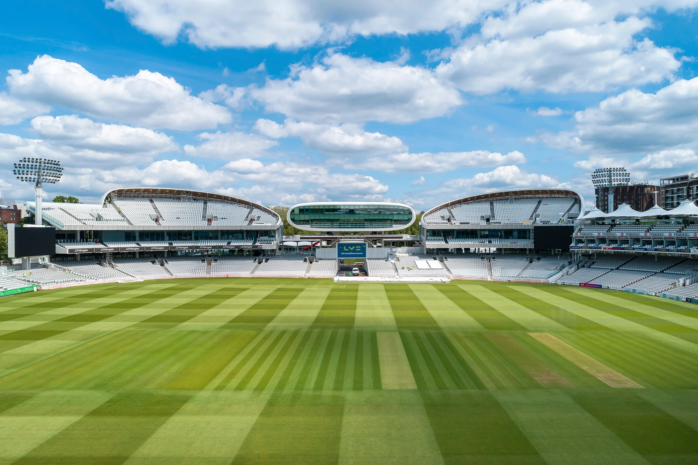
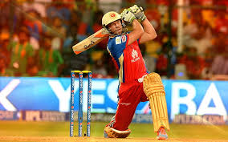
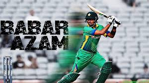
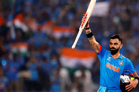
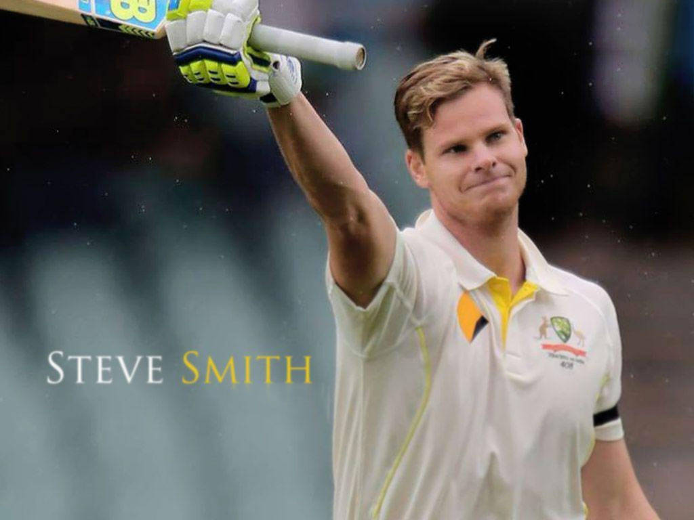
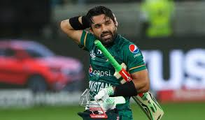
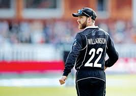

Talent Sports Academy was founded on the 22nd of Feb, 2012. Since 2012, we have worked on signing deals in many countries to allow us permission to build new stadiums and use their already existing grounds. All of our work was completed in recently in 2024 near Mid October. We had allowed teams to start to enter our Academy in the January of this 2025 year as a chance of allowing teams like Pakistan, India, Australia, England among many others to practice for the Upcoming Champions Trophy being held in Pakistan. In April we also allowed emerging under 19 Players to train here and take part in our lessons with retired legends or amazing coaches around the Globe. Our Main Head Quarters is in Pakistan but we have operational Head Quarters in almost every Cricket Playing Nation.
 We have more than 200 Stadiums across many countries that we can use as our Training Spaces unless a Match is happening in a stadium at present. We have the Home of Cricket Lords, The Big Melbourne Cricket Ground, Gadaffi Stadium, Eden Gradens, Headingly, Old Trafford Park, National Bank Karchi Stadium, Rawal Pindi Stadium, Multan Stadium, Sydney Cricket Ground, Adelaide Oval, Ahmedabad, Chinnaswamy, and Kolkota Staium among many many others.
 We have had many famous Players from different countries join us for training. Notable Players like Babar Azam, Joe Root, Kane Williamson, Virat Kohli among others have joined us.
 Babar Azam is a Pakistani cricketer who has gained recognition as one of the world's best batsmen. He is known for his elegant strokeplay and consistent run-scoring across all formats of the game. Azam is the current captain of the Pakistan cricket team in One Day Internationals (ODIs) and is also a prominent figure in Test and T20I cricket.
 Virat Kohli, born November 5, 1988, is an Indian cricketer considered one of the greatest batsmen of all time. He plays for Royal Challengers Bangalore in the IPL and previously captained the Indian national team in all three formats. Kohli is known for his aggressive batting style, strong leadership, and numerous records and awards. He has scored over 24,000 runs in international cricket and led India to several victories.
 Steve Smith, born June 2, 1989, is an Australian international cricketer and former captain of the Australian national team in all formats. He is widely regarded as one of the best Test batsmen of his generation and of all time, with over 10,000 Test runs. Initially a leg-spin bowler, Smith transformed into a prolific batsman, leading Australia in various series and winning multiple World Cups.
 Mohammad Rizwan is a prominent Pakistani cricketer, primarily known as a right-handed wicket-keeper-batsman. He is the current captain of the Pakistan team in limited-overs cricket and also leads the Multan Sultans in the Pakistan Super League. Rizwan is recognized for his strong wicket-keeping skills and aggressive batting style, particularly in T20 cricket.
 Kane Williamson is a renowned New Zealand cricketer, celebrated for his exceptional batting skills and calm leadership. He's widely regarded as one of the best batsmen of his generation and a leading figure in New Zealand cricket history. He's known for his sportsmanship and humility, earning him the nickname "the nice guy of cricket".